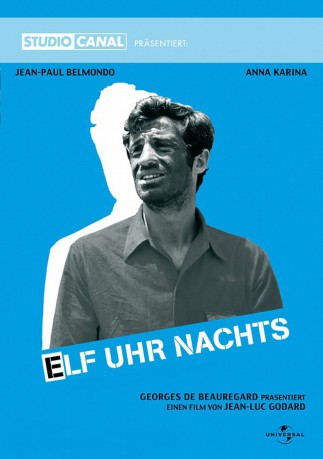

IMDB-Wertung: 7.7 / 10
IMDB-Wertung: 7.7 / 10  Metascore:
Metascore: 
Pierrot langweilt sich auf einem mondänen Empfang an der Seite seiner Frau in Paris, trifft seine Jugendliebe und brennt mit ihr durch. Das Drama wendet sich zu einem fulminanten Road Movie.
Alternativ: Pierrot le Fou (Englischer Titel)
 IMDB-Wertung: 7.7 / 10 Metascore:
Pierrot langweilt sich auf einem mondänen Empfang an der Seite seiner Frau in Paris, trifft seine Jugendliebe und brennt mit ihr durch. Das Drama wendet sich zu einem fulminanten Road Movie.
Jahr: 1965
Dauer: 110 Minuten
FSK: 16
Land: Frankreich Studio: Pallas FilmverleihTonspuren:
Untertitel: Deutsch,
Auflösung: 1080p (1920x816) Größe: 8130 MB
Regisseur:  Jean-Luc Godard
Jean-Luc Godard
Drehbuch: Joe Pontecorvo
Soundtrack:
Darsteller:
 Jean-Paul Belmondo als Ferdinand Griffon, 'Pierrot'
Jean-Paul Belmondo als Ferdinand Griffon, 'Pierrot' Jean-Pierre Léaud als Young Man in Movie Theatre , uncredited
Jean-Pierre Léaud als Young Man in Movie Theatre , uncredited Hans Meyer als Gangster , uncredited
Hans Meyer als Gangster , uncreditedDatei: X:\1965\Elf Uhr nachts (1965, FSK16, 1920x816).mkv seit 03.05.2017
Festplatte: HD 1900-1970
 Es gibt insgesamt 25 Filme in der Gruppe '1965'
Es gibt insgesamt 25 Filme in der Gruppe '1965'